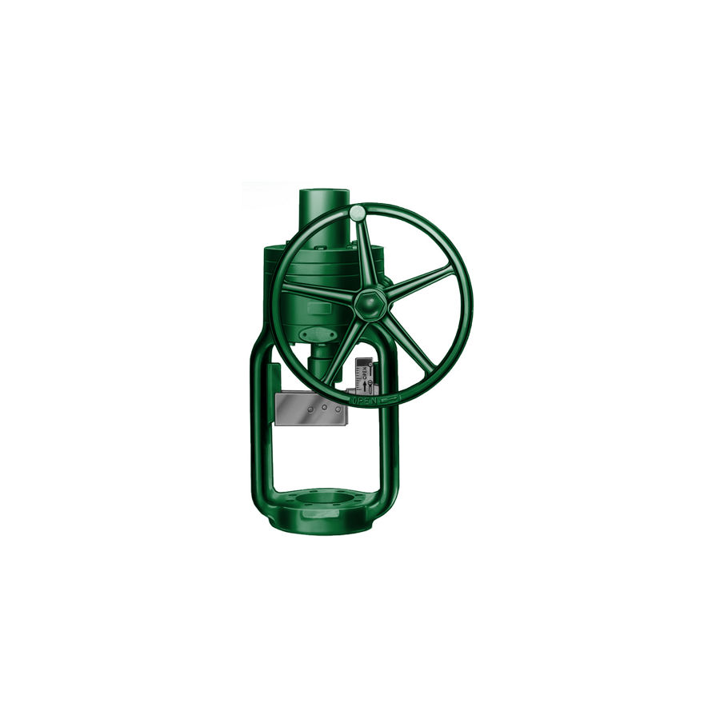
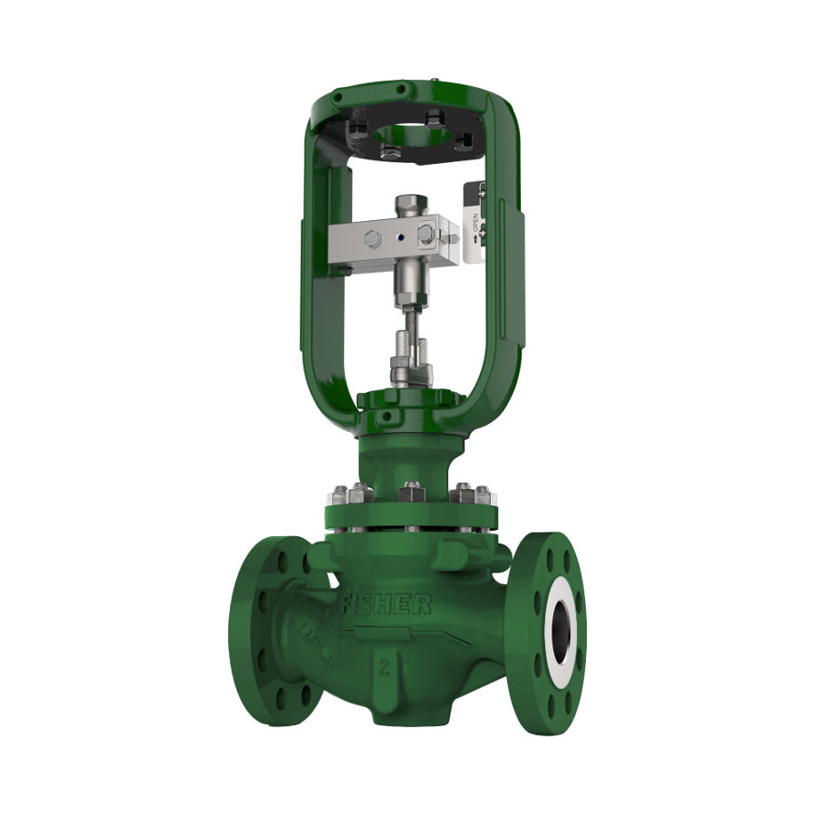
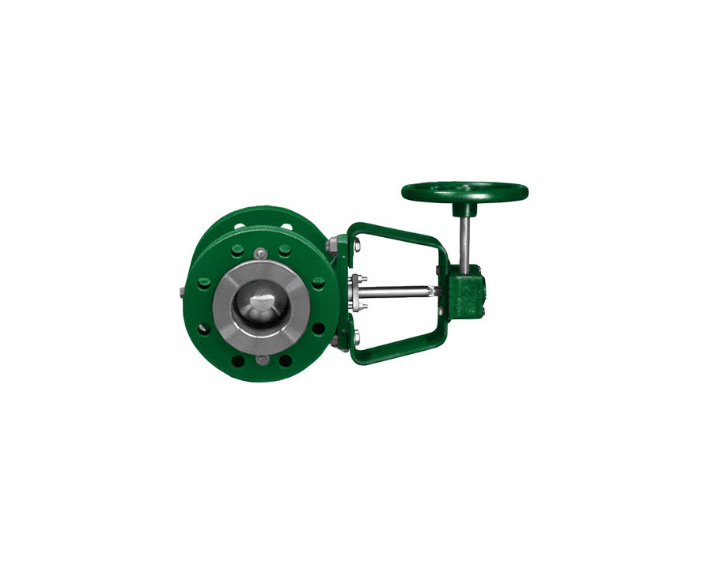
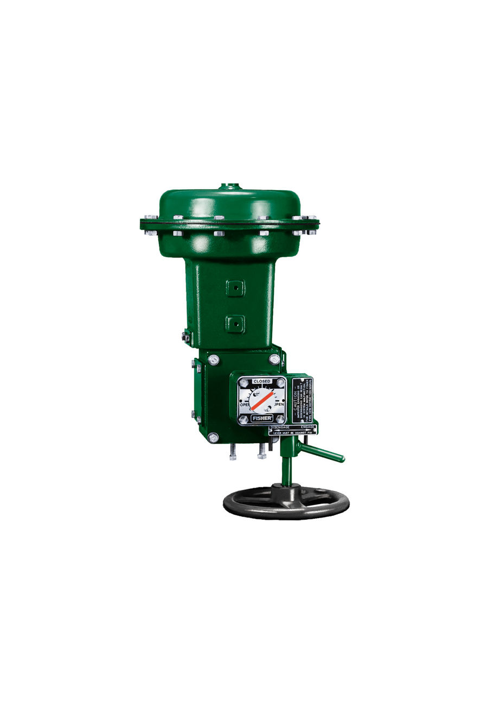
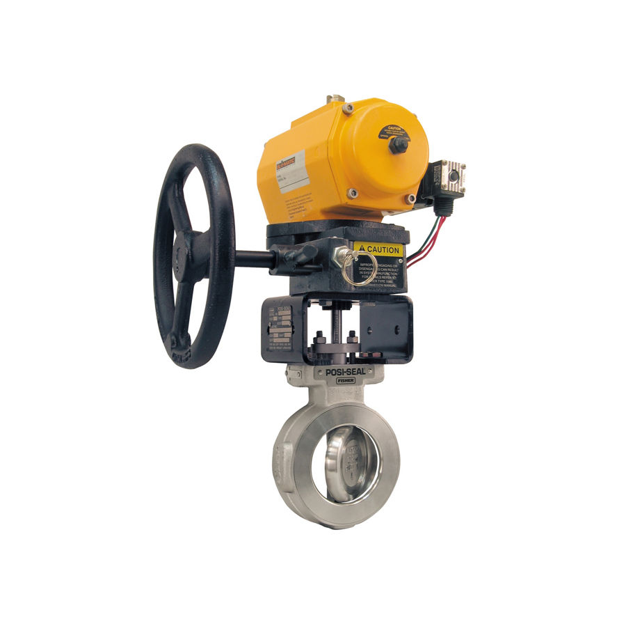
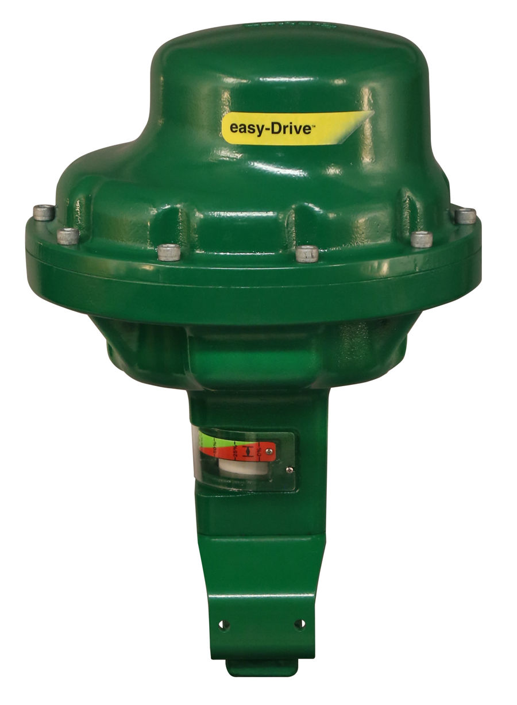

Fisher 1008 Manual Handwheel Actuator
Actuator Fisher 1008. The Fisher 1008 manual handwheel actuator is used in applications that require a throttling type of control…
Actuator điện easy-Drive 200L/200R và tay quay, bộ vận hành tay Fisher 1008, 1077, 1078 cho van khi cần thao tác tại chỗ.
Fast Group cung cấp actuator điện & tay quay Fisher chính hãng, đủ CO/CQ. Mỗi model có trang riêng với mô tả, biến thể, tài liệu kỹ thuật và hướng dẫn gửi RFQ.

Actuator Fisher 1008. The Fisher 1008 manual handwheel actuator is used in applications that require a throttling type of control…

Actuator Fisher 1010. Fisher 1010 Electric Actuator Mounting System enables seamless integration of ISO 5210-compliant electric…

Actuator Fisher 1077. Fisher 1077 manual-only handwheel actuators are intended for use with rotary-shaft valves. Learn more on…

Actuator Fisher 1078. Fisher 1078 manual actuators are declutchable actuators for manual operation of control valves and equipment…

Actuator Fisher 1080. The Fisher 1080 manual actuator is a declutchable actuator for manual operation of control valves that use a…

Actuator Fisher 200R. The Fisher easy-Drive 200R is a rotary electric actuator designed for the rigors of throttling or on/off…

Actuator Fisher easy-Drive 200L. Experience reliable operation and reduced maintenance with our easy-to-use, low power Fisher easy-Drive…
Trụ sở TP. Hồ Chí Minh và văn phòng Vũng Tàu đều tiếp nhận RFQ, tư vấn cấu hình và bàn giao bộ chứng từ CO/CQ; bảo hành chính hãng 12 tháng kể từ ngày giao hàng. Yêu cầu gửi trong giờ làm việc được phản hồi trong cùng ngày; giao hàng toàn quốc.
150/41 Nguyễn Cư Trinh, P. Cầu Ông Lãnh
51 Lê Văn Lộc, P. Vũng Tàu